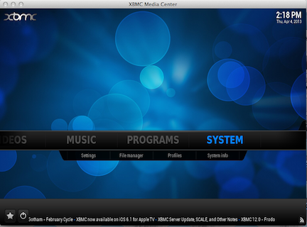

You can use XBMC to turn your computer into an XTV-compatible device, so you can test
your apps.
These are the rudimentary steps to setup XBMC.
Download XBMC from http://xbmc.org/ (where you can also consult the documentation or other resources), install
it, and start it.

Select System.
Select Services (located at the bottom of the left
navigation pane).
Click UPnP (located at the top of the left navigation
pane).
Select the Allow control of XBMC via UPnP radio
button.
Select AirPlay (located at the bottom of the left
navigation pane).
Click on the Allow XBMC to receive airplay radio button.
If you have any questions or need to troubleshoot your XBMC setup, you should
consult the XBMC documentation for further assistance.